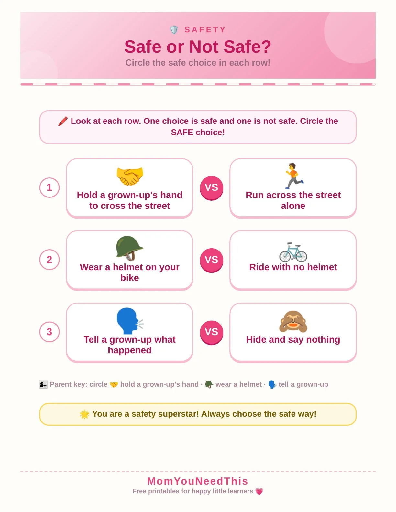

⭐ More Safety Activities Staying Safe, Every Day
Safety is a superpower. This bonus collection covers extra safety topics — from playground rules to sun safety — in friendly, fear-free ways for young children.
Quick Answer
This free printable safety activity rounds up the everyday safety topics (ages 2–5) that do not fit on the other pages: sun safety, water safety, playground safety and kitchen safety — through safety sorting games and “what would you do if…” practice. Kids build everyday safety habits by sorting safe from unsafe and rehearsing real situations from their own routines. Download and print at home with no signup needed.
At a Glance
- Ages: Toddlers and preschoolers (ages 2–5)
- Activity: Everyday safety topics: sun, water, playground and kitchen
- Skills: Safety habits and sorting
- Format: Printable worksheet (PDF)
- Cost: Free, no signup
The first safety pages teach the big rules; this one teaches the daily ones — the sunscreen, the slide queue, the hot stove, the pool gate. Everyday safety is not a list of fears. It is a set of habits so practiced they run automatically, and habits are built exactly the way these pages build them: sorted, named, and rehearsed against the places your family actually goes.
⭐ Explore More Safety Activities
Explore bonus safety topics, play safety sorting games, and build everyday safety habits.
💡 How To Use This Activity
Print the safety pages and anchor each rule to your real routines: the playground you actually visit, your family's own sun and water rules. Practise the 'what would you do if…' questions out loud together — an answer rehearsed now is easier to use later. The print button opens the full-size page in a new tab if you prefer to print from there.

🖨️ Download Your Free More Safety Activities Printable
Explore bonus safety topics, play safety sorting games, and build everyday safety habits. Print it out, grab the crayons, and you're ready — no signup needed.
⬇️ Download Free Printable 🖨️ Print🎁 Free printable for toddlers & preschoolers
🧺 Everyday Safety Habits, Topic By Topic
Sun safety. Shade, hat, sunscreen, water — the four-part uniform of a sunny day. The habit that matters most is the re-apply: sunscreen is a two-hour tool, not a morning spell, and swimming washes the clock faster. A child who asks “is it sunscreen time?” has internalized the whole topic.
Water safety. The rules are short because the stakes are high: always with a grown-up whose only job is watching (not a phone, not a book), life vests on boats and docks, no running on wet decks, and empty the buckets and bins after play — toddlers can drown in inches of water, head-first and silently. Water safety is supervision first and swimming lessons as the backstop, never the substitute.
Playground safety. Slides are one-way streets (down the chute, up the ladder), swings need a walking margin in front and behind, and hot metal gets a hand-test in summer before a leg-test. The “what would you do if” that matters here: a ball rolls into the parking lot — answer: it stays there until a grown-up retrieves it.
Kitchen safety. Pot handles turn in, hot means hands-off until a grown-up says otherwise, and the stove's territory belongs to adults. The companion skill is knowing what TO do in a kitchen — tearing lettuce, washing vegetables, carrying the unbreakable things — because children who have a job in a room respect its rules far better than children merely banned from it.
❓ More Safety Activities FAQs
What activities are included in More Safety Activities?
This page collects our free bonus safety printables in one place: exploring everyday safety topics (sun, water, playground, kitchen), playing safety sorting games, and building safety habits through “what would you do if…” practice. Download the printable below and start learning right away.
Are these activities really free?
Yes — every printable on MomYouNeedThis is 100% free to download and print. No signup, no payment, just tap the download button. This set works best printed once and kept — the sorting games replay well as your child's routines grow. This set works best printed once and kept — the sorting games replay well as your child's routines grow.
How do I use these activities with my child?
Print the safety pages and anchor each rule to your real routines: the playground you actually visit, your family's own sun and water rules. Practice the “what would you do if…” questions as a game — ball in the parking lot, stranger's dog, a friend who dares. Children answer in play what they will do in life, and the rehearsal is the habit forming.